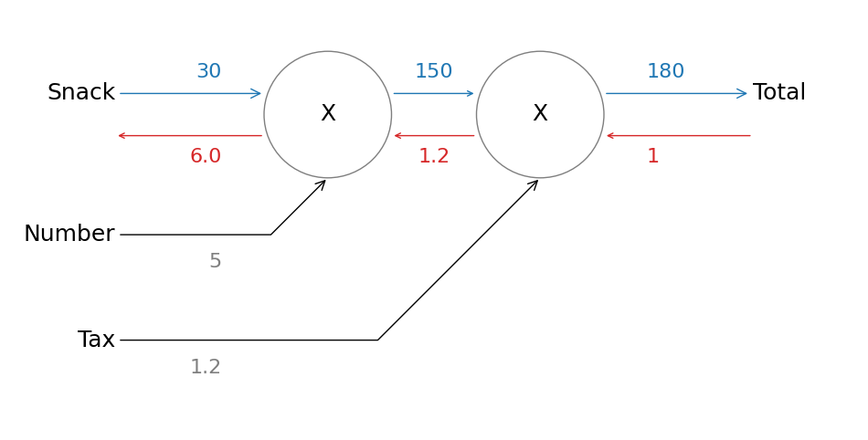

逆伝播
逆伝播#
import matplotlib.pyplot as plt
import matplotlib.patches as pat
labels = ['Snack', 'Number', 'Tax', 'Total']
params = [30, 5, 1.2]
foward = [params[0]*params[1], int(params[0]*params[1]*params[2])]
backward_start = 1
backward = [backward_start*params[2], backward_start*params[2]*params[1]]
fig, ax = plt.subplots(figsize=(12,6))
# node
node_size = 0.3
node_y = 0.5
node1_x = -0.5
node1 = pat.Circle(xy=(node1_x, node_y), radius=node_size, fill=False, color='tab:gray')
ax.add_patch(node1)
ax.text(x=node1_x, y=node_y, s='X', ha='center', va='center', size=18)
node2_x = 0.5
node1 = pat.Circle(xy=(node2_x, node_y), radius=node_size, fill=False, color='tab:gray')
ax.add_patch(node1)
ax.text(x=node2_x, y=node_y, s='X', ha='center', va='center', size=18)
# edge between 2 nodes
edge_y_offset = 0.1
ax.annotate('',
xy=(node2_x-node_size, node_y+edge_y_offset), xytext=(node1_x+node_size, node_y+edge_y_offset),
arrowprops=dict(arrowstyle='->', color='tab:blue'))
ax.text(x=(node1_x + node2_x)/2, y=node_y+edge_y_offset*2, s=foward[0], ha='center', va='center', size=16, color='tab:blue')
ax.annotate('',
xy=(node2_x-node_size, node_y-edge_y_offset), xytext=(node1_x+node_size, node_y-edge_y_offset),
arrowprops=dict(arrowstyle='<-', color='tab:red'))
ax.text(x=(node1_x + node2_x)/2, y=node_y-edge_y_offset*2, s=backward[0], ha='center', va='center', size=16, color='tab:red')
# edge before node
input_x = -1.5
ax.annotate(labels[0], size='18',
xytext=(input_x, node_y+edge_y_offset), xy=(node1_x-node_size, node_y+edge_y_offset),
va="center", ha='right', arrowprops=dict(arrowstyle='->', color='tab:blue'))
ax.text(x=(input_x + node1_x)/2, y=node_y+edge_y_offset*2, s=params[0], ha='right', va='center', size=16, color='tab:blue')
ax.annotate('',
xytext=(input_x, node_y-edge_y_offset), xy=(node1_x-node_size, node_y-edge_y_offset),
va="center", ha='right', arrowprops=dict(arrowstyle='<-', color='tab:red'))
ax.text(x=(input_x + node1_x)/2, y=node_y-edge_y_offset*2, s=backward[1], ha='right', va='center', size=16, color='tab:red')
ax.annotate(labels[1], ha='right', size='18',
xytext=(input_x, -0.1), xy=(node1_x, node_y-node_size),
arrowprops=dict(arrowstyle='->',
connectionstyle='angle,angleA=0,angleB=-135,rad=0'))
ax.text(x=(input_x + node1_x)/2, y=-0.2, s=params[1], ha='right', va='center', size=16, color='tab:gray')
ax.annotate(labels[2], ha='right', size='18',
xytext=(input_x, -0.6), xy=(node2_x, node_y-node_size),
arrowprops=dict(arrowstyle='->',
connectionstyle='angle,angleA=0,angleB=-135,rad=0'))
ax.text(x=(input_x + node1_x)/2, y=-0.7, s=params[2], ha='right', va='center', size=16, color='tab:gray')
# edge output
output_x = 1.5
ax.annotate(labels[3], size='18',
xy=(node2_x+node_size, node_y+edge_y_offset), xytext=(output_x, node_y+edge_y_offset),
va="center", ha='left', arrowprops=dict(arrowstyle='<-', color='tab:blue'))
ax.text(x=(node2_x + output_x)/2, y=node_y+edge_y_offset*2, s=foward[1], ha='left', va='center', size=16, color='tab:blue')
ax.annotate('',
xy=(node2_x+node_size, node_y-edge_y_offset), xytext=(output_x, node_y-edge_y_offset),
va="center", ha='left', arrowprops=dict(arrowstyle='->', color='tab:red'))
ax.text(x=(node2_x + output_x)/2, y=node_y-edge_y_offset*2, s=backward_start, ha='left', va='center', size=16, color='tab:red')
ax.set_xlim(-2, 2.0)
ax.set_ylim(-1, 1)
ax.axis("off")
plt.show()

演算 |
\(x\)で偏微分 |
\(y\)で偏微分 |
ようするに |
|---|---|---|---|
\(z=x+y\) |
\(\dfrac{\partial z}{\partial x}=1\) |
\(\dfrac{\partial z}{\partial y}=1\) |
\(+\)の逆伝播はそのまま戻す |
\(z=x\times y\) |
\(\dfrac{\partial z}{\partial x}=y\) |
\(\dfrac{\partial z}{\partial y}=x\) |
\(\times\)の逆伝播は相手を戻す |
\(z=x\div y\) |
\(\dfrac{\partial z}{\partial x}=\dfrac{1}{y}\) |
\(\dfrac{\partial z}{\partial y}=-\dfrac{1}{y^2}\) |
|
\(sigmoid; y = \dfrac{1}{1 + \exp(-x)}\) |
\(y^2 \exp(-x)\) |